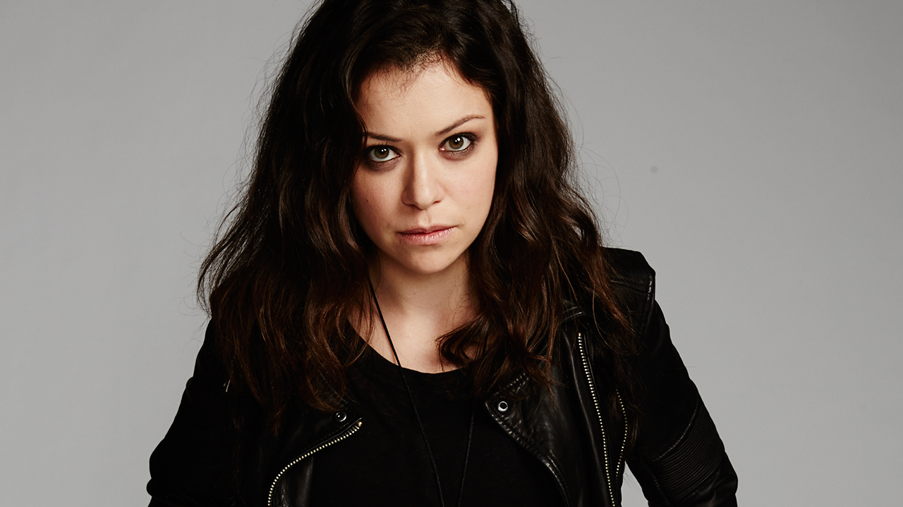
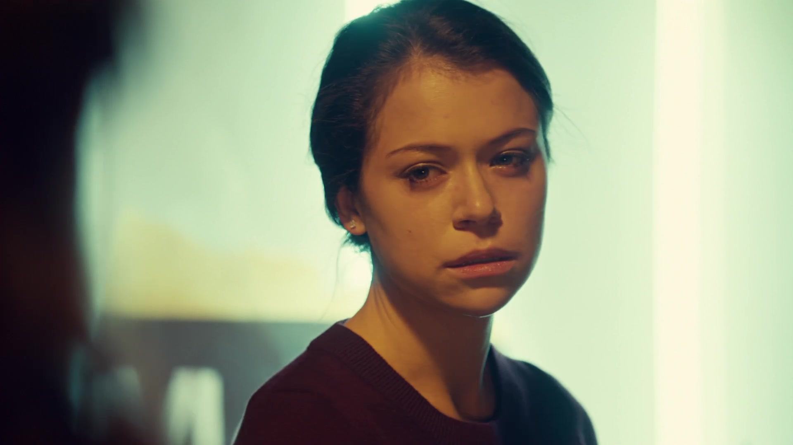
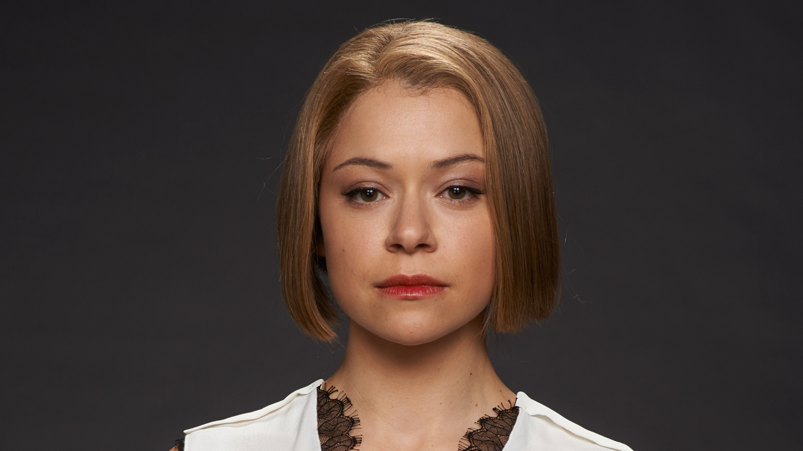
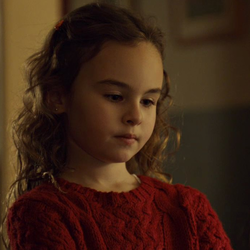
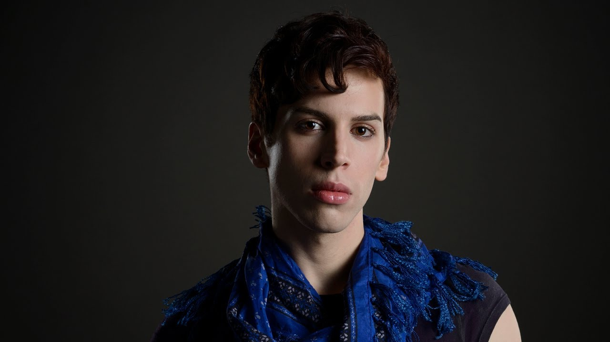

ORPHAN BLACK
A Série
Depois de presenciar o suicídio de uma mulher (que é exatamente como ela) em uma estação de trem, Sarah Manning (Tatiana Maslany) faz o que qualquer um faria: assume a identidade da suicida para tentar resolver os próprios problemas financeiros. Mas logo ela descobre que está no centro de um mistério que vai mudar sua vida, quando se vê cara a cara com mais três mulheres idênticas a ela. Todas são clones, e precisam salvar as próprias peles enquanto tentam descobrir quem são os responsáveis pelos experimentos genéticos.
As Temporadas
- Primeira Temporada
- Segunda Temporada
- Terceira Temporada
- Quarta Temporada
A primeira temporada contou com 10 episódios, sendo o primeiro lançado em 30 de março de 2013 e o último em 1 de junho de 2013, com cada episódio de em média 45 minutos. Após presenciar o suicídio de uma desconhecida com a aparência idêntica à sua, Sarah Manning, uma órfã britânica com um histórico de delitos criminais, resolve furtar seus pertences e assumir sua identidade, se passando pela detetive Elizabeth Childs. As intenções iniciais de Sarah eram simplesmente tomar posse do dinheiro contido na conta bancária de Childs e usá-lo para começar uma nova vida com seu irmão adotivo Felix Dawkins e sua filha de 7 anos, Kira. Sarah usa a morte de Beth para despistar seu ex-namorado, um traficante de drogas chamado Victor, assumindo a identidade da policial e, consequentemente, acaba se envolvendo em uma conspiração envolvendo clonagem humana. Sarah então tem de ao mesmo tempo impedir que a polícia descubra sua identidade verdadeira e ajudar suas recém-descobertas irmãs clones a descobrir sua verdadeira origem, além de se proteger de um grupo de fanáticos religiosos que desejam destruí-las.
A segunda temporada tem início em 19 de abril de 2014 e termina em 21 de junho de 2014 e continuará com o mesmo formato de episódios da primeira. Sarah está correndo contra o tempo para encontrar a sua filha Kira que está desaparecida. Suas atitudes desencadeiam uma guerra com a sua pró-clone Rachel, dividindo e colocando em perigo todos os clones. Sarah começa a descobrir coisas de seu passado, enquanto os novos personagens surgem misteriosamente. Por fim, ela é sequestrada.
A terceira temporada teve início em 18 de abril de 2015 e terminou em 20 de junho de 2015, contendo o mesmo formato de episódios das temporadas anteriores, 10 episódios. A história volta de onde parou, com Sarah descobrindo sobre os clones masculinos, e seus mais novos perigos. Ela também tem que correr contra o tempo, para resgatar sua irmã Helena, das mãos do exercito. Sarah e suas irmãs se unem para se proteger, e acabam descobrindo mais sobre suas origens.
A quarta temporada contém a descoberta do clone original, mãe da Sra. S. E assim, as clones vêem oportunidade de cura com as células dela. Com muitas indas e vindas, elas e a Dra. Duncan (que está viva) são enganadas pela até então, diretora da Neovolução e perdem todas as pesquisas feitas e um dos capangas da Neovolução mata a clone original, assim acabando de vez com as pesquisas. Cosima tem a brilhante idéia de como recomeçar as pesquisas, mas contando com a ajuda da Dra. Duncan e Rachel. Enquanto isso Donnie, marido de Alison, é preso por tráfico de drogas e os Hendrix são usados pela Neovolução para chegar até a Sarah.
Personagens
- Sarah 
- Elizabeth Child 
- Rachel 
- Kira 
- Felix 